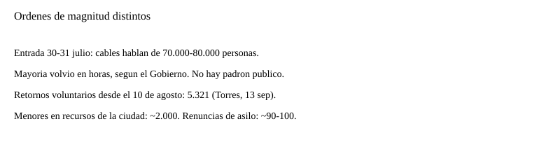

España · Ceuta · 13 de septiembre de 2026
El Gobierno cuenta 5.321 retornos a Marruecos; Ceuta estima que siguen miles.

images/ceuta-hero.svg.
Lo que coinciden las redacciones
El ministro de Política Territorial, Ángel Víctor Torres, difundió este domingo un recuento administrativo. RTVE, 20minutos y EFE coinciden en las cifras centrales: 5.321 personas habrían retornado de forma voluntaria a Marruecos desde el 10 de agosto; unas 90 habrían renunciado a la petición de asilo; 864 personas que pernoctaban junto a Loma Colmenar fueron trasladadas de madrugada a un recinto en Los Rosales; el Estado habla de 4.500 plazas habilitadas; la Ciudad Autónoma tiene a su cargo unos 2.000 menores.
La entrada masiva de los días 30 y 31 de julio se describe en esos mismos cables como un orden de 70.000 a 80.000 personas. El Gobierno sostiene que la mayoría regresó en horas. Torres ha dicho en días previos que es “imposible” fijar con exactitud cuántos se quedaron. Esa imposibilidad importa: sin padrón, cada cifra posterior es un recuento parcial o una estimación.
EFE, recogida por Infobae, atribuye a las autoridades locales de Ceuta una estimación de unas 13.000 personas aún en la ciudad, entre adultos, niños y adolescentes. No es un censo publicado con metodología. Es una cifra política de quien gestiona la calle.
Lo que solo es una cita
El presidente Pedro Sánchez ha dicho que no hay prueba alguna de que Marruecos organizara la rotura de la frontera. El PP sostiene que el Ejecutivo tenía avisos de una avalancha. Un barómetro de laSexta, difundido este domingo, afirma que casi el 56 por ciento de los encuestados cree que el Gobierno tenía información previa. Una encuesta no es un telegrama de interior. Tratar el barómetro como prueba de un aviso concreto baja la C.
Vecinos y migrantes citados en crónicas describen una calle. No miden el stock de personas.
Mecanismo que el lector necesita
Ceuta es una ciudad autónoma española en la costa norteafricana, con frontera terrestre con Marruecos. Quien entra de forma irregular no obtiene por ese hecho un derecho a pasar a la península. El asilo se pide, se instruye y se resuelve. Quien no tiene protección internacional puede ser devuelto si está identificado y el expediente está vivo. Por eso Torres insiste en la filiación: sin nombre y huella no hay devolución formal, solo el paso voluntario por la puerta del Tarajal que describen las crónicas.
Los menores no se gestionan igual que los adultos. Los unos 2.000 que cita el Gobierno están bajo recursos de la ciudad. Esa cifra no se suma de forma honesta a las 4.500 plazas estatales como si fueran el mismo inventario.
Un retorno voluntario y una devolución con expediente son procedimientos distintos. Mezclarlos en un titular produce un número más limpio y un hecho peor medido.
La diferencia entre 5.321 y 13.000 no se resuelve con un adjetivo. La primera cifra es un recuento de salidas que el ministerio dice haber registrado desde el 10 de agosto. La segunda es una estimación de stock que las autoridades locales dan a los cables. Un flujo y un stock no se restan en una servilleta sin fechas comunes y sin padrón.
Los 864 trasladados el domingo salen de la calle y entran en un recinto. Eso mejora el conteo futuro porque un recinto permite filiar. No demuestra que el resto de la estimación local esté inflada o deflactada. Una persona puede estar en un piso, en una playa, o haber salido sin figurar en la lista de retornos voluntarios.
El derecho de asilo no es un cupo municipal. Una solicitud obliga al Estado a examinar. Una renuncia, como las unas 90 anunciadas, cierra ese examen por voluntad del solicitante. Una denegación lo cierra por resolución. Las tres cosas son estados distintos.
Lo que esta historia no es
No es un censo de domingo. No es una sentencia sobre si Marruecos abrió o no la frontera. No es un recuento de muertos del 30 y 31 de julio. No es un plan europeo. Feijóo ha anunciado una reunión el jueves con el comisario de Migraciones; esa reunión no ha ocurrido.

Artículos fuente y puntuaciones
Imágenes: Commons Special:FilePath + SVG de fallback en esta carpeta.